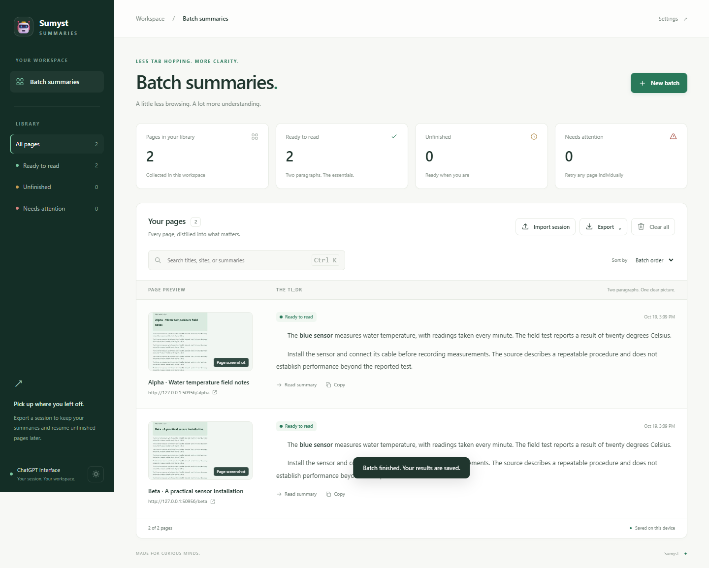

WELCOME TO A CLEARER BROWSER
Keep the insight.
Skip the scroll.
Turn a long page into something you can use. Sumyst brings summaries, follow-up questions, and a whole reading queue into one place.
- Keep Sumyst close.In Chrome, open the Extensions puzzle menu and pin Sumyst. In Safari, enable Sumyst under Safari → Extensions.
- Open something worth reading.A webpage, a PDF, or a YouTube video with captions.
- Generate Summary.Click the extension icon, the video button, or select a passage and use the floating glass button.

ONE FAMILIAR CONNECTION
Your ChatGPT.
Now in context.
Use your signed-in ChatGPT session to summarize pages and ask questions. Continue to connect ChatGPT.
Automatic model routing. No API key to configure.
- Sign in to ChatGPT.Open ChatGPT in this browser and make sure a regular conversation works.
- Return to your page.Sumyst uses that session. ChatGPT’s usage limits and service availability still apply.

YOU’RE READY
One page.
Or your whole queue.
Start with a single summary, then ask a question when you want to go deeper. Long sources are read in sections and combined into one result.
Click Sumyst. Choose your language, read the TL;DR, and use Ask question for follow-ups.
For the tabs you’ll read laterRight-click the extension icon for Batch summaries. Keep source links, export your results, or import a session to continue later.
On iPhone or iPadAfter installing the Safari build, use Share → Sumyst on a webpage. The Apple version requires a signed build.